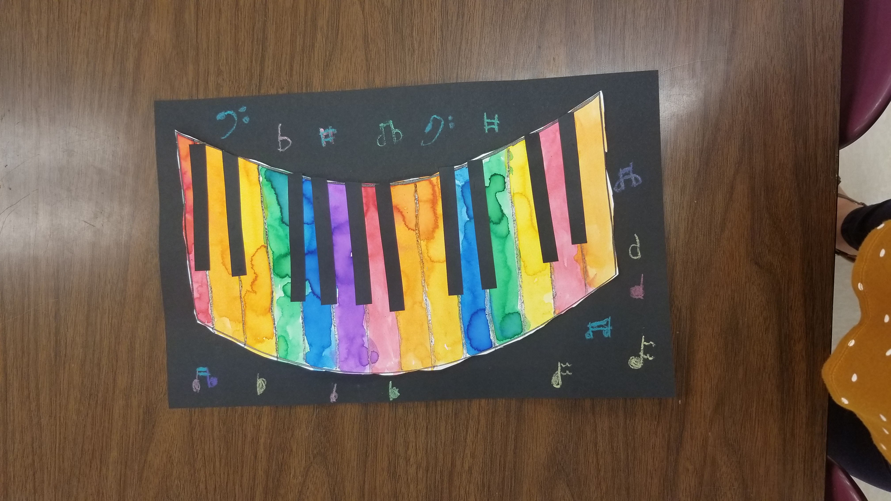

Welcome to the website for art at Heritage Elementary! Here, you can find the amazing projects we are working on, scroll through last projects, view our lessons and learning targets, and find great art education resources! I hope you enjoy our page!
Recent Projects
This page will be updated weekly with the lastest project updates. Projects will be posted in order from newest to oldest. I will also keep this page updated with progress pictures and important information from the art room! Check back weekly to see our latest creations!
September 30-October 4, 2019
All classes finished their color projects this week! They look amazing!
Also, check out these amazing results from the kindergarten color pre test and post test!Their growth is remarkable!!
Student Data
Student
Pre Test
Post Test
Growth Percentage
Student 1
7/20
16/20
45%
Student 2
2/20
12/20
50%
Student 3
14/20
120/20
30%
Student 4
3/20
19/20
80%
Student 5
1/20
8/20
35%
Student 6
15/20
19/20
20%
Kindergarten Rainbow Pianos
You can see the complete lesson plan for this project here: Rainbow Pianos

1st Grade Chris Uphues Color Wheels
Chris Uphues is a great artist who inspired this project. Check out is artwork on his website Here!
2nd Grade Op Art Rainbows
September 23-27, 2019
This week we continued working on all of our amazing color projects! All of the kids are so proud of their work! Look at what we accomplished this week!
Kindergarten Rainbow Pianos
After learning painting procedures and painting their pianos with control, the kindergartenrs looked at real piano keys and added black strips of paper to their pianos in the correct pattern--Just like a real piano!
1st Grade Chris Uphues Color Wheels
1st graders are painting paper for their Chris Uphues inspired color wheels. They were give the three primary colors (red, yellow, and blue) and were responsible for mixing their own secondary colors (green, purple, and orange)! So far they are looking amazing! Check back next week to see how we transform these papers!
2nd Grade Op Art Rainbows
The 2nd graders painted an entire piece of paper in all of the rainbow colors. They practiced neat painting techniques and worked on blending and smoothing their paint colors. Next week we will start drawing black and white Op Art to put on top of our rainbow!
September 16-20, 2019
We're crazy about color! This week all students are learning about color! Check out our most recent work:
Kindergarten Rainbow Pianos
The kindergarteners learned about the 7 colors of the rainbow and put their knowledge to practice by painting with watercolors on the keys of a piano! These beauties will be cut out and glued to black paper. Black keys will be added along with some music notes! Check out how they are coming along!
1st Grade Chris Uphues Color Wheels
1st graders are painting paper for their Chris Uphues inspired color wheels. They were give the three primary colors (red, yellow, and blue) and were responsible for mixing their own secondary colors (green, purple, and orange)! So far they are looking amazing! Check back next week to see how we transform these papers!
2nd Grade Op Art Rainbows
The 2nd graders painted an entire piece of paper in all of the rainbow colors. They practiced neat painting techniques and worked on blending and smoothing their paint colors. Next week we will start drawing black and white Op Art to put on top of our rainbow!